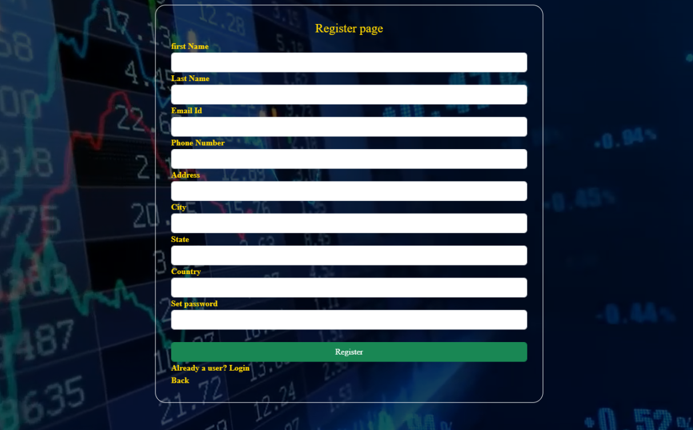
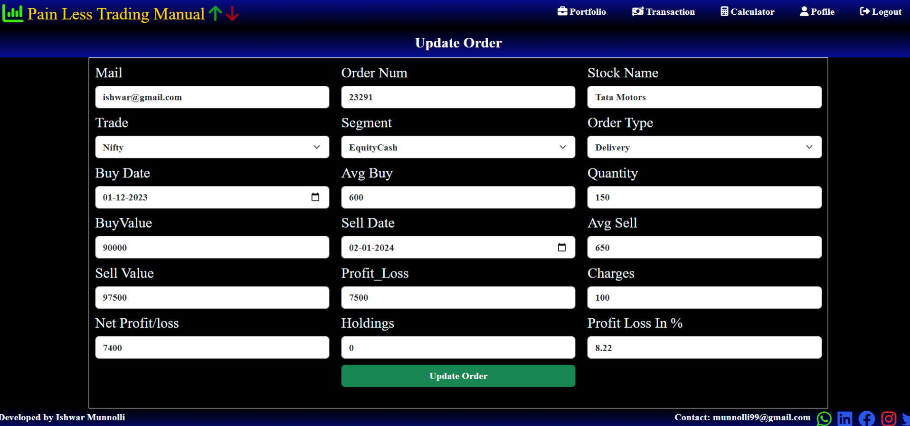
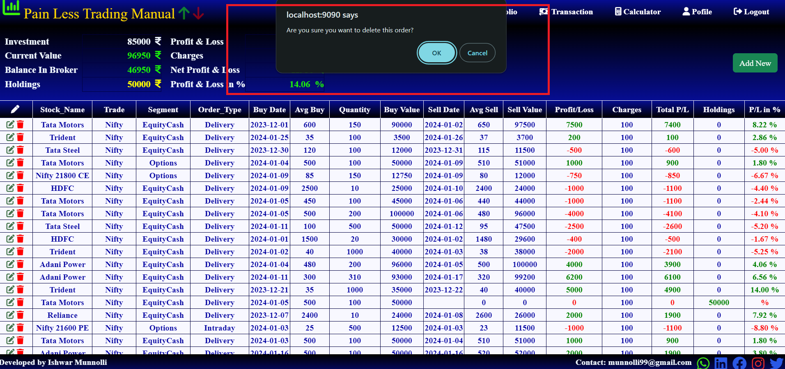
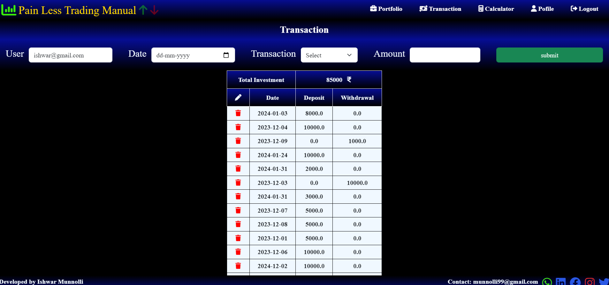
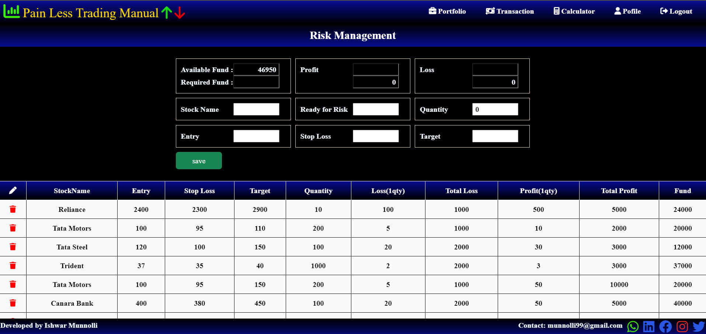
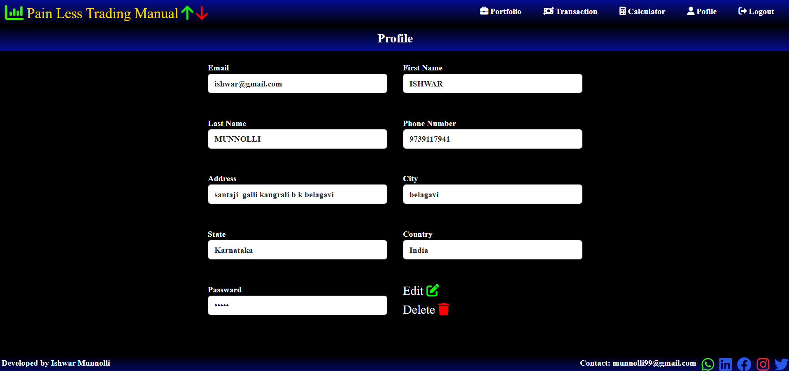

Trading Data Management System
Technologies Used
Programming Language – Java, Spring Boot
Graphical User Interface – HTML, CSS, JavaScript, Bootstrap
Description:
Developed a personal project, "Pain Less Trading Manual," driven by a keen interest in trading. Leveraged Java Spring Boot, Thymeleaf,HTML, CSS, JavaScript, and Bootstrap to create a comprehensive trading data management system. The project showcases my dedication to combining technology with my passion for trading.
Key Contributions:
Independently designed and implemented the backend functionality using Java Spring Boot, focusing on robust data processing and management.
Crafted a user-friendly frontend with Thymeleaf,HTML, CSS, and JavaScript, ensuring an intuitive interface for efficient data entry and retrieval.
Achievements
Successfully developed a personal project that highlights my skills in full-stack development.Demonstrated the ability to apply technology tocreate practical solutions in an area of personal interest.

Starting Page.
This is the starting page.When the user clicks the login or register button, it will redirect to that particular page.

Login Page
This is the login page. Users can log in to access the trading platform.

Login Page
This is the login page when the entered data is not present in the database or if there is an invalid input.

Register Page
This is the register page where users can create a new account for trading.

Portfolio Page:
After logging in, users can access the portfolio, displaying details such as investments, profits, and losses. The page contains a header and footer that redirect to specific sections.

Add New Order Page:
Clicking the "Add New Order" button opens this page. Users can input data, and the system performs auto calculations. Once submitted, the information is stored in the database.

Success Order Prompt:
After successfully adding a new order, a prompt confirms the action, providing a positive feedback message to the user.

Update Order Page:
Users can update existing orders by clicking the "Update" button on the portfolio page. The page displays previous data, allowing for easy modification and updating.

Delete Order Page:
Clicking the "Delete" button removes the selected order from the database, ensuring accurate and up-to-date portfolio information.

Transaction Page:
This page facilitates deposit and withdrawal transactions. The system performs auto calculations in the backend, providing accurate and real-time financial data.

Risk Management Page:
Users can plan their trades on this page, specifying entry points, stop-loss levels, and target profits. This feature aids in strategic trade planning and risk management.

User Profile Page:
This page displays detailed user information, providing a comprehensive overview of the user's account and settings.